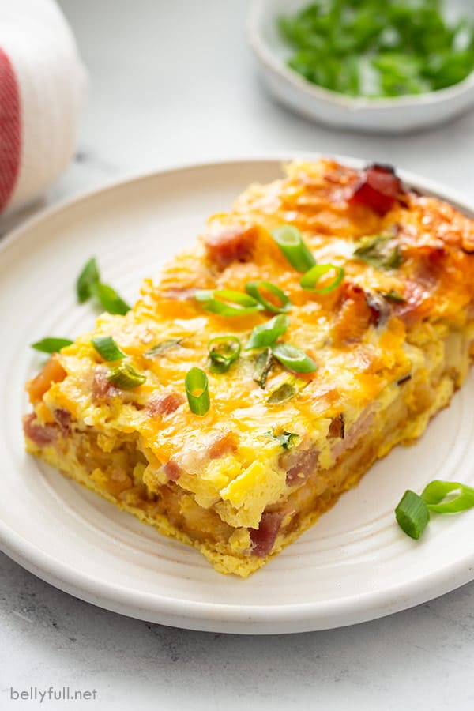

Egg Casserole

Description
This egg casserole is a delicious take on an old classic. It
combines a simple breakfast dish of eggs with a scrumptious combination of cheese, veggies, and sausage.
This will become a family classic!
Ingredients
- 12 eggs
- 1lb breakfast sausage
- 1 medium onion
- Two bell peppers
- 6oz shredded cheddar cheese
- 6oz heavy whipping cream
Steps
- Preheat oven to 375 degrees
- Begin to saute onion and bell peppers over high heat in skillet
- When halfway cooked, add breakfast sausage
- About three minutes before sausage is fully brown, add diced garlic cloves
- Beat eggs in a separate mixing bowl. Then, add the saute mixture to the bowl along with the cheese and whipping cream. Stir until well mixed
- Pour mixture into casserole dish and bake for 40min or until center is fully cooked